Progetto Fondamenti di Computer Graphics
Realistic City
Introduzione
Lo scopo di questo progetto è di ricreare attraverso le tecniche di Computer Graphics una scena simil realistica, prendendo come soggetto un cortile tributo alle strade di Parigi.
L'obiettivo è quello di gestire luci ed ombre e riflessioni (in futuro anche trasparenze e ulteriori dettagli) per ricreare una piccola ambientazione realistica, che ritragga un panorama degno di una foto.
L'idea nasce proprio in una giornata di sole, nella quale ho scattato alcune foto alle strade del centro, e rivedendole mi sono salatati all'occhio piccoli ma importanti dettagli che mi hanno ispirato alla realizzazione di questo progetto.
Per questo all'interno del progetto ho deciso d'inserire, per rendere onore alla bellezza della scena, una macchina fotografica come oggetto animato, con la quale sia possibile collocarsi in varie angolazioni e scattare foto ricordo che sarà possibile scaricare
Sono questi gli obiettivi principali del mio prototipo di progetto che implementa le funzionalità principali appena descritte.
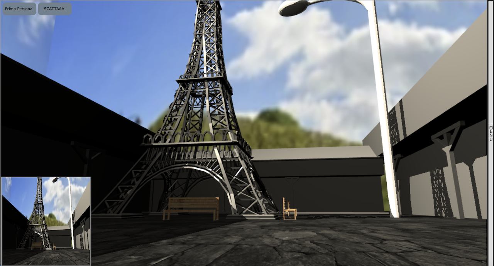
Indice
Funzionalità
Le funzionalità di questo progetto riguardano la simulazione di una macchina fotografica con la ricreazione di un ambientazione realistica tramite i giochi di luce ed ombre.
I principali oggetti presenti nel progetto sono:
- Una macchina fotografica come Obj principale che è possibile muovere all'interno della scena
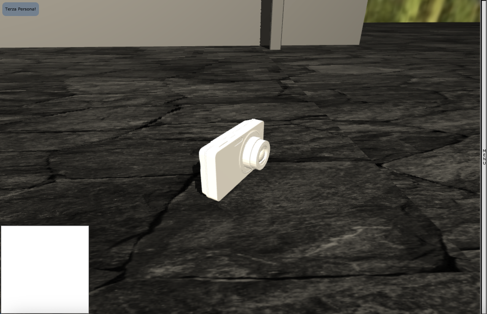
- Dei porticati a racchiudere la scena esplorabile permettendo di mostrare ancora più dettagli sui giochi di ombre
- Un Obj della torre Eiffel per rendere la scena più fotografica e permettere di apprezzare le ombre di una geometria complessa
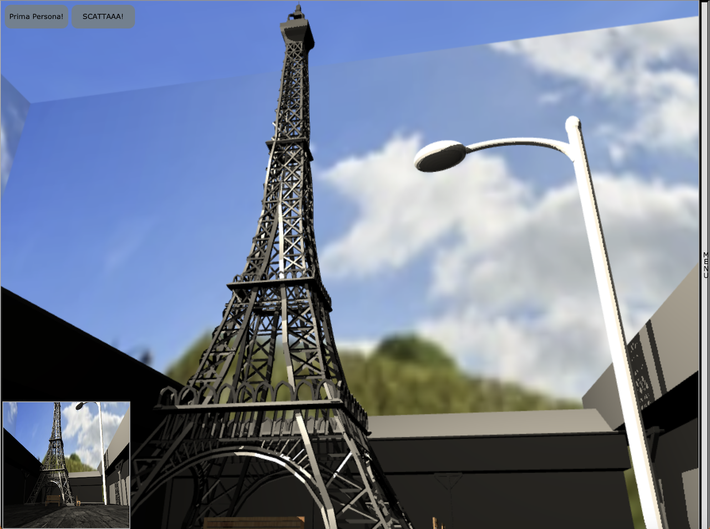
- Alcuni Obj di abbellimento, come delle panchine e un lampione da strada per rendere il prototipo di scena più realistico
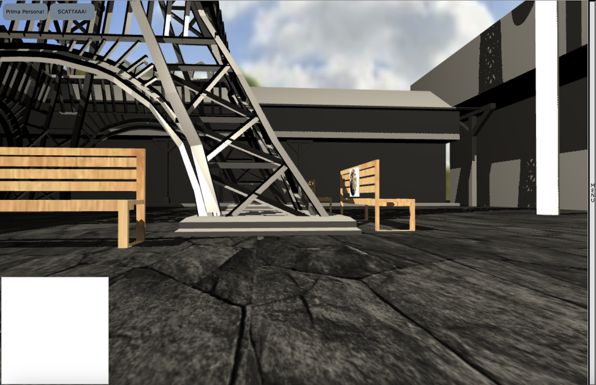
- Un obj con la foto dell'autore del progetto
Le funzionalità più importanti riguardano:
- La possibilità di muovere l'oggetto Fotocamera nella scena tramite tastiera e mouse/trackpad
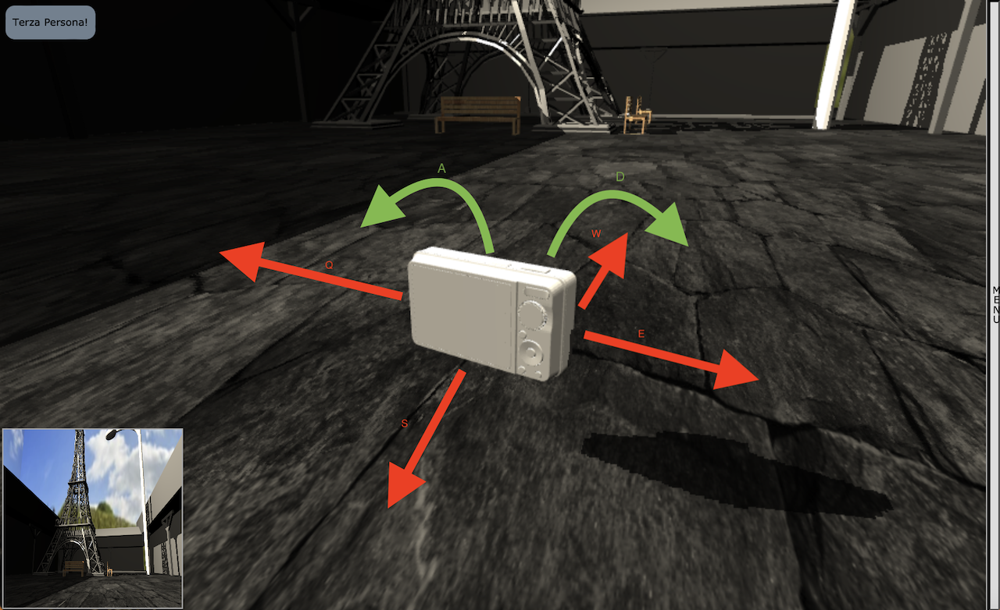
- La possibilità di cambiare la visuale passando dalla 'Terza Persona' alla "Prima Persona"
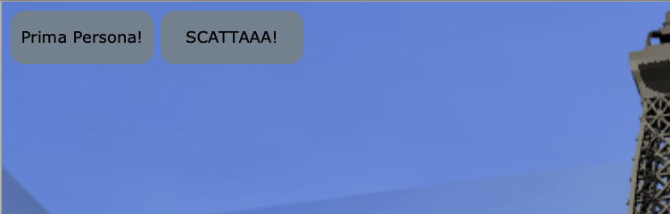
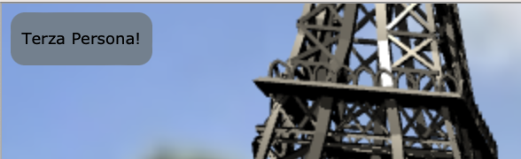
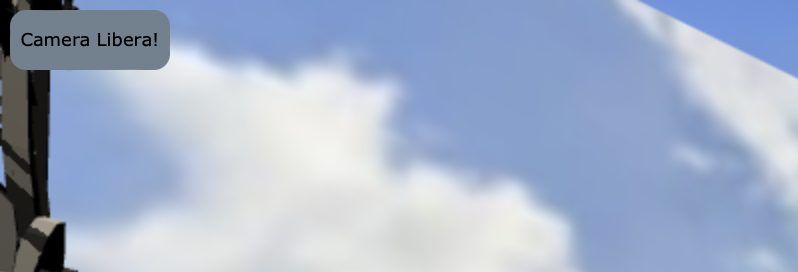
- Possibilità di passare alla "Camera Libera" per poter esplorare liberamente la scena e gli ulteriori dettagli
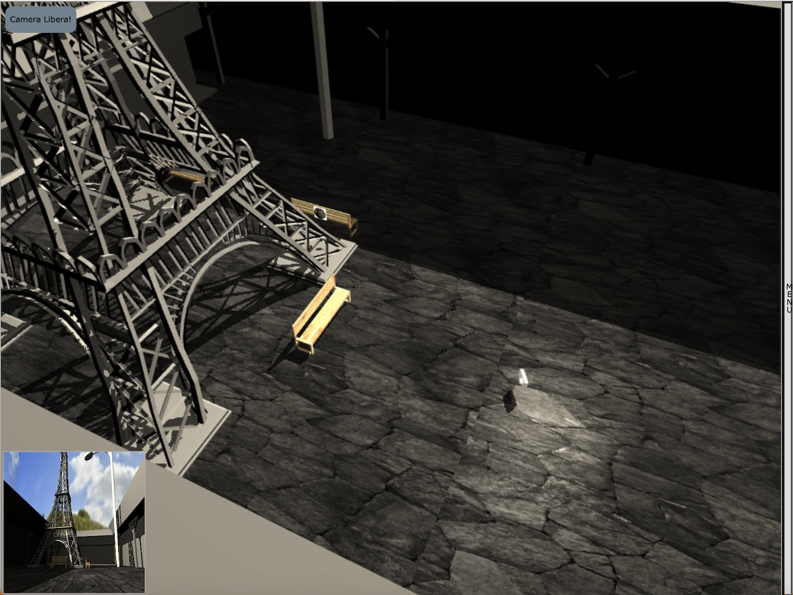
- Scatto di foto in prima persona, modificando anche lo zoom e l'inquadratura tramite mouse
- E' presente un secondo canvas in cui verrà visualizzata la foto scattata che sarà possibile anche scaricarla e salvarla
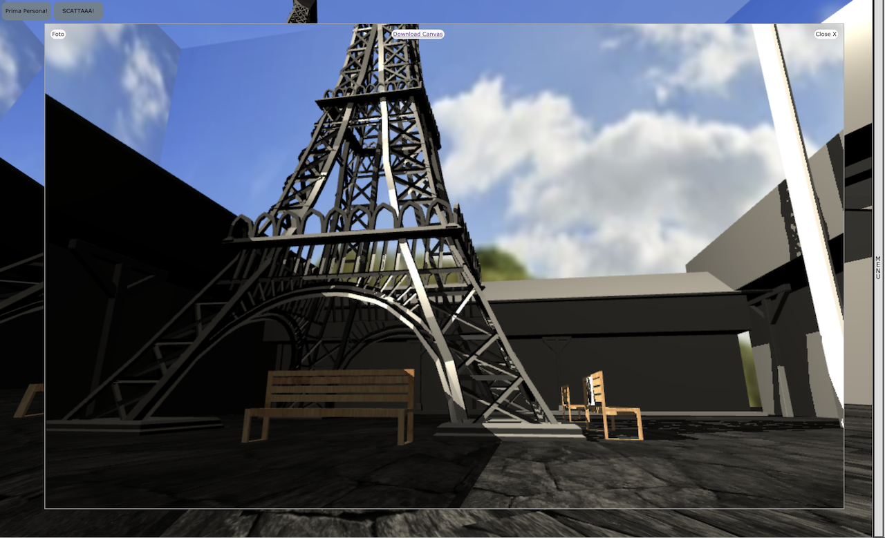
- Tramite il Menù sarà possibile accedere alle impostazioni che permettonon di modificare le opzioni grafiche della camera permettendo l'ottenimento di ulteriori effetti grafici per le proprie foto
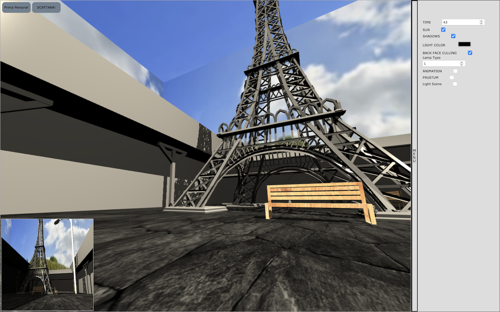
La camera di default seguirà il nostro oggetto principale, partendo con una camera in "Terza Persona", il quale potrà muoversi solo all'interno dei confini della nostra scena.
Sarà possible poi cambiare visuali tramite i comandi appositi, e in prima persona verrà visualizzato il pulsante per scattare una foto.
La "Prima persona" simula dunque l'inquadratura della Fotocamera, della quale sarà possibile anche modificare angolatura e zoom tramite i comandi che verranno descritti in seguito.
Le ulteriori ed importanti funzionalità realizzate sono:
- La gestione della luce solare modificando la direzione nelle impostazioni
- La possibilità di abilitare la modalità Notte o Giorno, modificando il tipo di illuminazione da "Sole" a "Lampione"
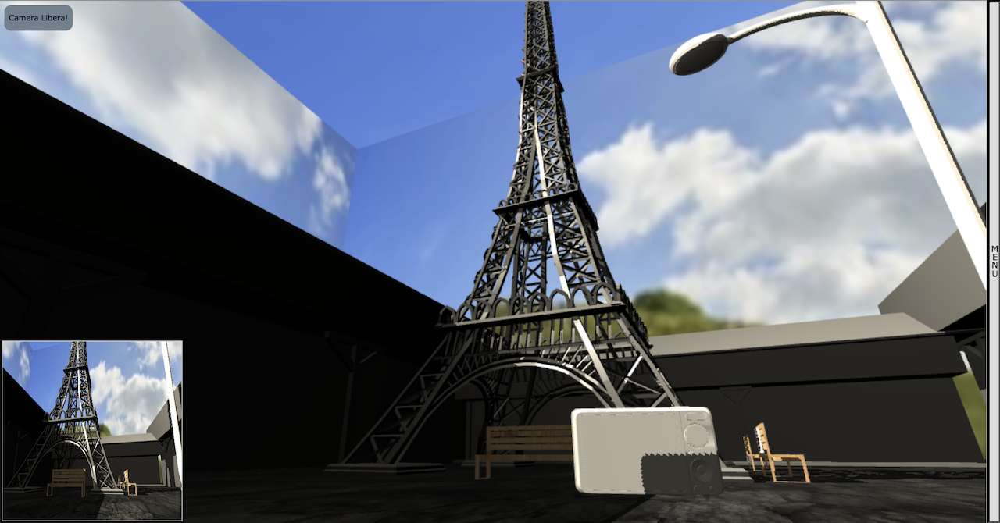
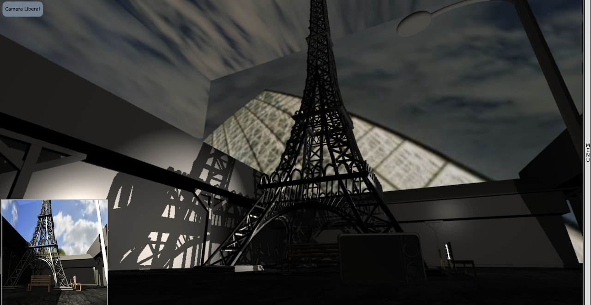
- La possibilità di modificare il colore della luce nella scena
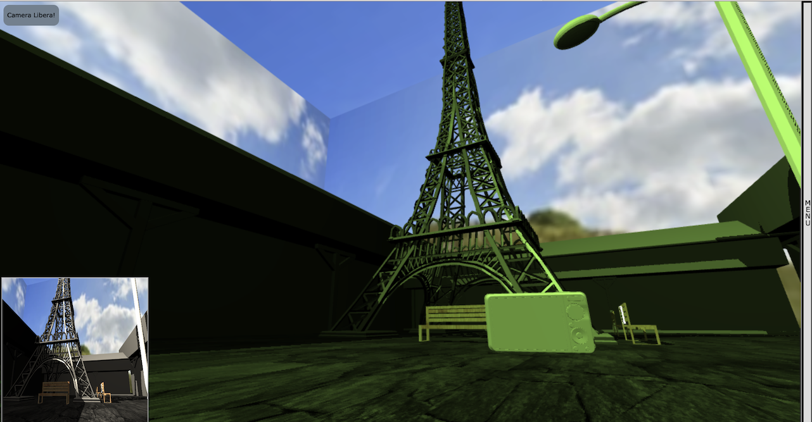
- Abilitare l'animazione automatica delle luci nella scena, per osservare meglio i giochi di ombra in maniera fluida
Interazione Utente e Visuali
L'interazione con l'utente è stata gestita nella maniera più intuitiva possibile.
Infatti è stata usata una combinazione di Tastiera e Trackpad per gestire tutte le opzioni di movimento e di visualizzazione della camera.
Tramite la tastiera sarà possibile muovere l'oggetto o la camera stessa (in base a se ci si trova in modalià "Camera Libera" o meno):
- Con i tasti W,S si muove l'ogetto in avanti e indietro
- Con i tasti Q ed E si sposta l'oggetto in orizzontale, rispettivamente Sinistra e Destra
- Con i tasti A e D si ruota l'oggetto
- Con il tasto V è possibile cambiare visuale
Il movimento dell'oggetto avverrà sul suo asse frontale, dunque se si ruota l'oggetto questo poi su muoverà avanti in base a come è stato angolato.
L'oggetto si muove solo sul piano orizzontale.
Con il Trackpad/mouse sono stati gestiti invece ulteriori controlli riguardanti la telecamera.
In questo caso questi differiscono in base alle 3 differenti visuali.
- Terza Persona
- Prima Persona
- Visuale Libera
Con i seguenti comandi:
- Con il Trascinamento del cursore è possible modificare l'inquadratura della camera.
- Nel caso della terza persona permetterà di ruotare attorno all'oggetto.
- In prima persona invece permetterà di modificare l'angolo verticale di visualizzazione.
- Il Pan-in/out sul Trackpad o la Rotella sul mouse permettono invece di:
- In "Terza Persona": avvicina e allontana la camera (visuale) dall'oggetto.
- In "Prima Persona" invece permette di regolare lo zoom della fotocamera
-
Comandi touch per quanto riguarda i dispositivi mobili
- Comandi touch che rispecchiano l'utilizzo del mouse
- Bottoni che permetteranno la sostituzione dei comandi di movimento da tastiera
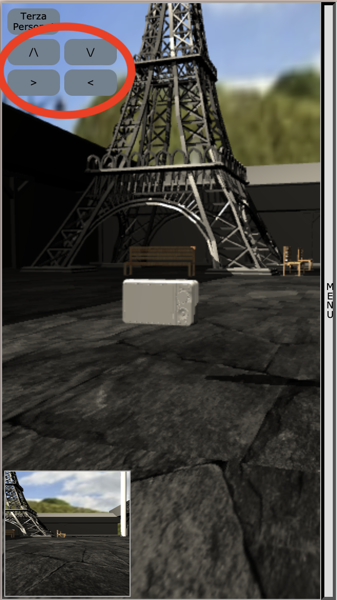
- Impostazioni nel menu che permettono la gestione della Fov e della Distanza in modo da sostituire il pan da trackpad/la rotella
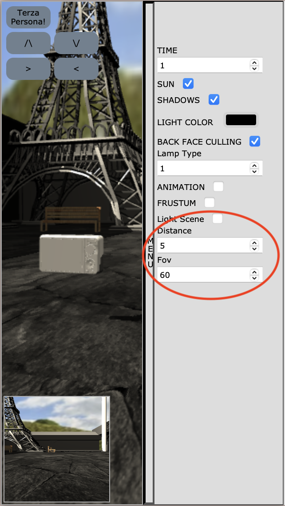
La possibilità di scattare foto sarà data in ogni caso dai bottoni presenti in alto a sinistra. Il pulsante di scatto appare solo in prima persona
e permette lo scatto della foto e l'apertura del secondo canvas in cui viene visualizzata la foto scattata
Il secondo canvas con l'ultima foto scattata si trova in basso a sinistra e:
- lo si può cliccare per aprilo ed visualizzare la foto
- Dopo di chè sarà possibile chiuderlo tramite la "x" di chiusura
- O scaricare la foto fatta sul proprio PC cliccando sulla scritta "Download"
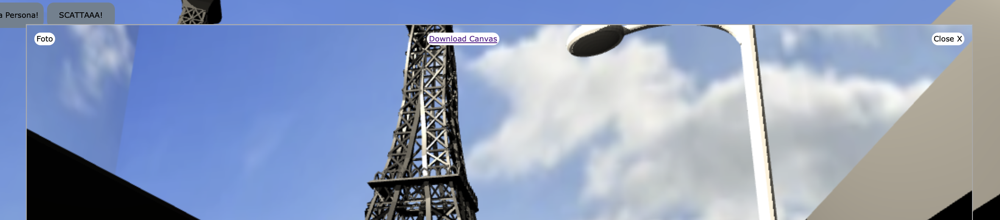
Illuminazione
L'illuminazione è stata gestita e controllata in modo da avere un modello quanto più simile alla realtà. Con ovviamente alcune limitazioni per motivi di tempo richiesti per sviluppare ulteriori dettagli, sicuramente sviluppabili in futuro.
Il modello di visualizzazione e di gestione delle luci è stato gestito prinicipalmente nei vari shader del progetto. Che per la precisione sono 3.
- Uno per il lo Skybox (che non è affetto dai cambiamenti dell'illuminazione)
- Uno per tutti gli oggetti che implementa un modello di illuminazione personalizzato e modificato per il rendering della luce, come ad esempio le riflessioni e i colori
- Un terzo per la creazione della DepthTexture per il disegno delle ombre
Gli shader prendolo le informazioni di illuminazione e le varie impostazioni con il passaggio degli uniform nel momento del rendering. Gli uniform provengono sia dalle caratteristiche delle mesh prese dal file MTL degli Obj, sia dall'oggetto "Light" implementato che definisce come la scena viene illuminata.
E grazie a questo oggetto Javascript è possibile creare e modificare i vari tipi di illuminaizone presenti all'interno del progetto.
Luci
- Il modello d'illuminazione è definito dello shader:
- Nelle impostazioni è possibile passare da Giorno a Notte modificando così anche il tipo di illuminazione presente nella scena:
- Giorno: Luce direzione (a imitare il sole)
- Notte: Luce puntiforme (a simulare la luce di un lampione/faro)
- Per la notte sono presenti 3 tipi di luci diverse, con diverse angolazioni e giochi di luce
- Inoltre è possibile attivare l'animazione della luce tramite le impostazioni, attivando un cambio di direzione fluido ed automatico della luce
- E' possibile anche modificare il colore della luce tramite le impostazioni
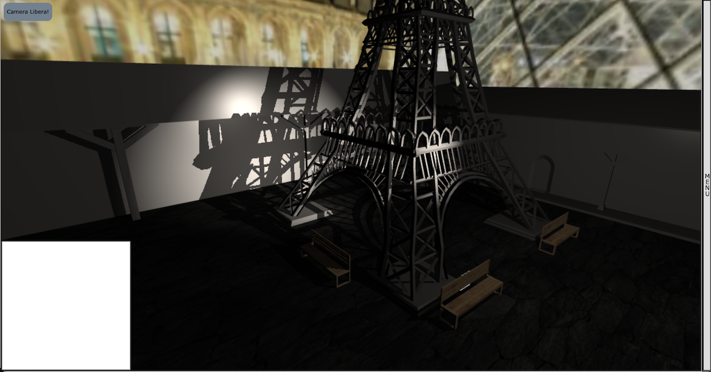
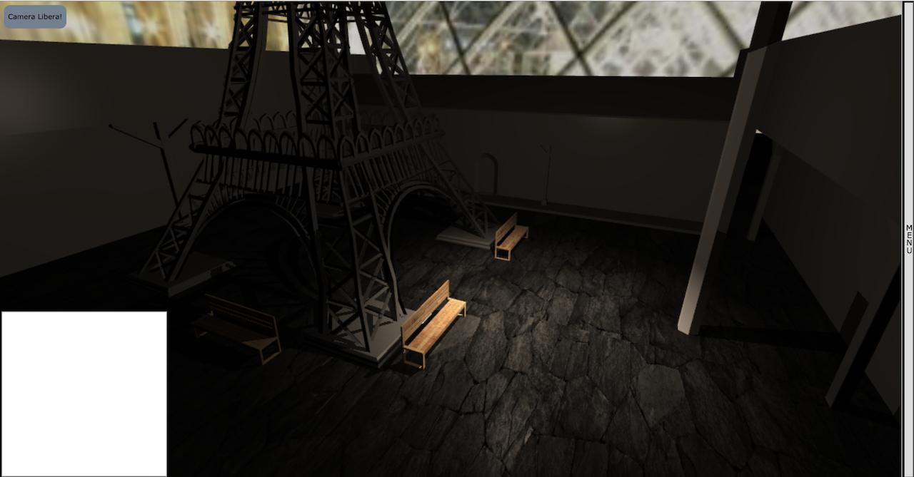
Ombre
- Per le ombre è stato utilizzato il "color-shader" per riempire la DepthTexture e poi calcolare nello shader principale quali pixel sono in luce e quali no
- Tramite le impostazioni è possibile attivarle e disattivarle per ottenere scene diverse
- Inoltre è stata utilizzata una dimensione molto grande per la DepthTexture in modo da avere ombre più definite possibili ed evitare il loro effetto di pixel
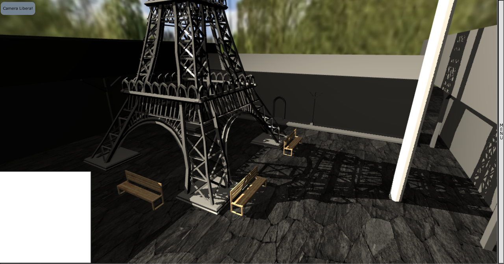
Riflessioni
Le riflessioni implementate riguardano l'illuminazione. Ogni oggetto in base alle caratteristiche del suo materiale riflette la luce in modo diverso.
E' possibile infatti notare su ogni superficie che più ci si avvicina all'angolo di riflessione della sorgente luminosa più rifletterà
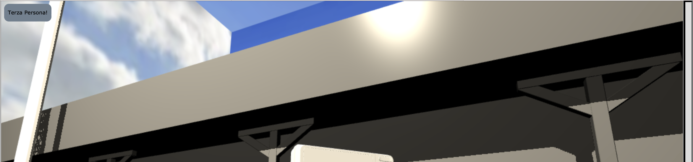
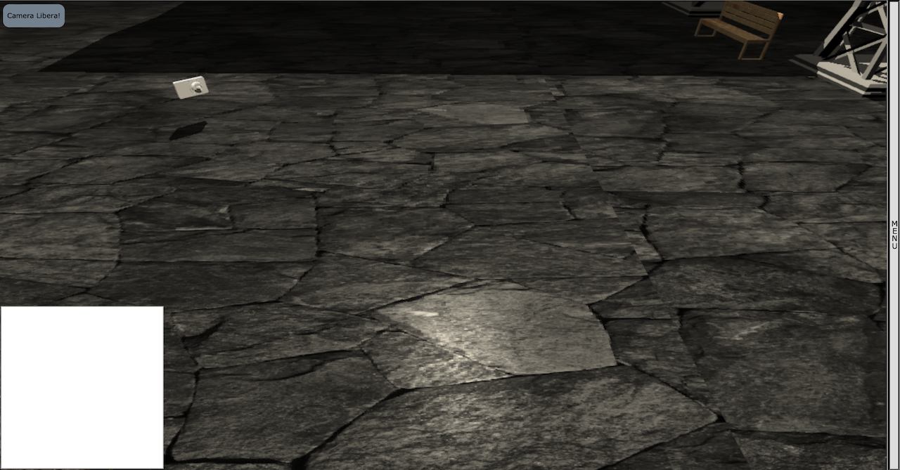
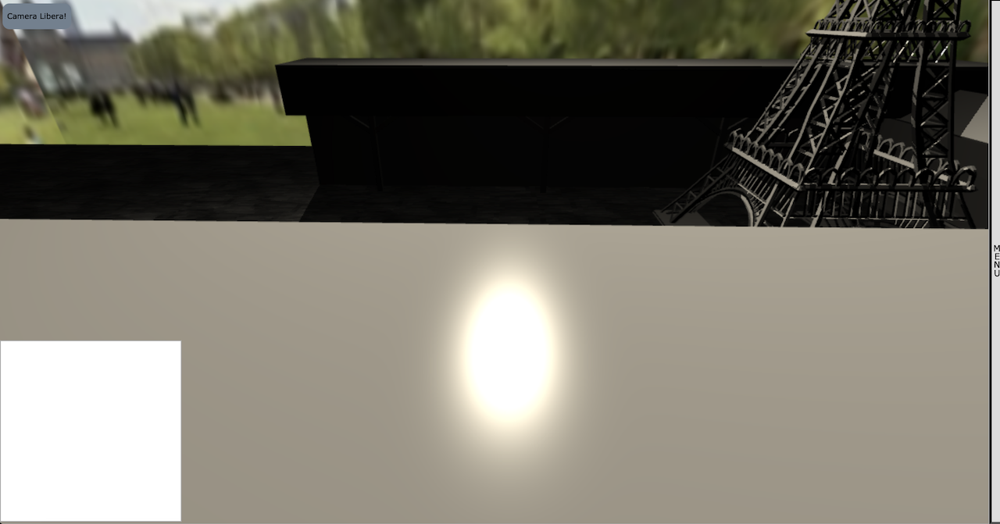
Controlli e Configurazioni
Per quanto riguarda i controlli è stato implementato un menù, creato da zero, con all'interno alcune impostazioni per la modifica della scena e della visuale
- Time: per la modifica dell'ora del giorno (ovvero della direzione dei raggi solari), in modo da poter creare differenti i giochi di ombre.
- Sun: l'impostazione permette di passare dalla modalità "Giorno" alla modalità "Notte".
- Shadows: permette l'attivazione e la disattivazione del rendering delle ombre.
- Light Color: permette d'impostare il colore della luce che illumina la scena.
- Back Face Culling: permette l'attivazione e la disattivazione dell'impostazione del "Back Face Culling".
- Lamp Type: permette di scegliere, nella modalità notte, tre differenti tipi d'illuminazione.
- Animation: permette di Attivare e Disattivare l'animazione automatica della luce.
- Frustum: Attiva e Disattiva il rendering del "frustum" della luce.
- Light Scene: Attiva o disattiva l'impostazione di scena "light" diminuendo il numero di oggetti all'interno della scena per renderla più fluida per PC meno prestazionali.
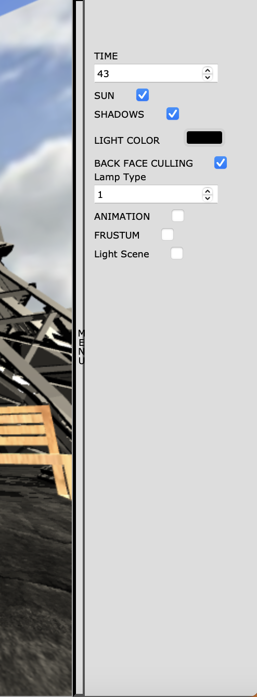
Opzionalmente in caso di dispositivi mobile
- Distance: permette la modifica della distanza della camera dall'oggetto principale (la camera digitale).
- Fov: Permette la modifica e il setting della Field of View della camera.
Conclusioni
Textures
Un ultima nota riguarda le texture utilizzate, come quella del pannello, che raffigura una foto della'utore del progetto.
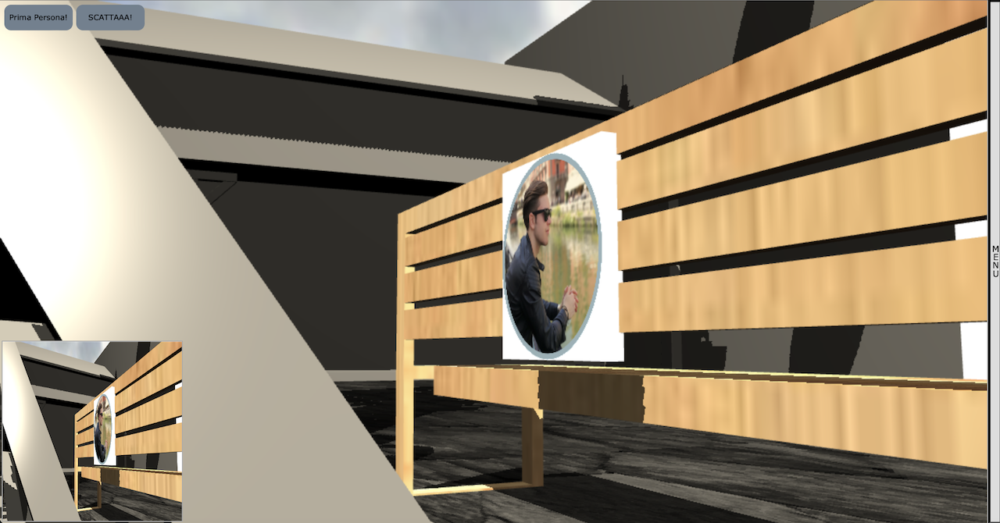
Inoltre, sono state inserite ulteriori texture, come quella della panchina o quella del pavimento, con le quali è stato effettuato l'uv mapping su belnder in modo da ottenere una giusta resa.
Stesso è stato fatto per il pannello con l'immagine, la quale è stata inserita in modo da essere visibile da un solo lato in maniera corretta.
Alcuni Obj sono stati realizzati su blender, come il porticato che racchiude la scena, partendo da pezzi base giò presenti nelle lezioni, effettuando modifiche nella modalità di editing.
Conclusioni
Questo progetto vuole essere un prototipo di esempio, per questo per ragioni anche di tempistiche alcune impostazini sono state limitate e non gestite in ogni dettaglio.
Ma il tutto è stato impostato e implementato in maniera modulare in modo da permettere facili sviluppi e modifiche future, come:
- L'aggiunta della gestione di ulteriori impostazioni
- la modifica degli shader per un modello di illuminazione ancora più dettagliato e realistico riprendendo il modello di Phong
- La gestione di ulteriori dettagli di grafica come le trasparenze e il bump mapping, per una scena ancora più realistica
- La modifica dello skybox con immagini realizzate ad hoc per avere un ambientazione più realistica
Il progetto però implementa molte funzionalità che permettono all'utente di effettuare una gran quantità di azioni con anche una eccellente resa grafica, dimostrando tutte le potenzilità della computer grafica con WebGl e l'esplorazione e l'impegno messo nella realizzazione dello stesso, soprattuto in relazione ai dettagli grafici e di utilizzo.
Grazie per l'attenzione! - Luca Landolfi